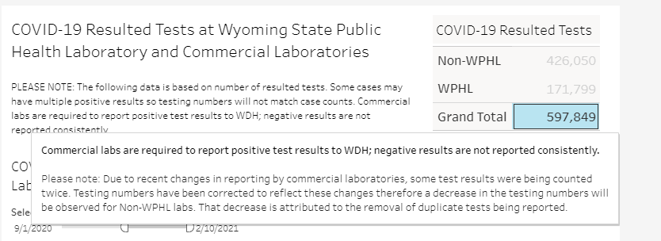

[WY] Backfill timeseries to reflect duplicate negative tests removed from the count by Wyoming
Issue number 1094
muamichali opened this issue on February 10, 2021 at 4:33 pm
Labels Data quality not stale
State or US: Wyoming
Describe the problem On February 9, 2021, Wyoming’s Total PCR tests (specimens) fell from 704,836 to 595,970. We carried the previous day’s number as we believed this may have been an error and wanted to allow them time to correct it. On February 10, 2021, we learned that the decrease “Due to recent changes in reporting by commercial laboratories, some test results were being counted twice. Testing numbers have been corrected to reflect these changes therefore a decrease in the testing numbers will be observed for Non-WPHL labs. That decrease is attributed to the removal of duplicate tests being reported”. As a result of this new information, we are backfilling our Total PCR tests (specimens) to reflect this new information and ensure that our data aligns as closely as possible with the states.
We should backfill Total Tests (PCR), Positive Tests (PCR) and Negative Tests (PCR)
Link to data source

This issue has been automatically marked as stale because it has not had recent activity. It will be closed if no further activity occurs. Thank you for your contributions!
This issue has been closed because it was stale for 15 days, and there was no further activity on it for 10 days. You can feel free to re-open it if the issue is important, and label it as “not stale.”
This was already handled by https://github.com/COVID19Tracking/issues/issues/1093
This issue has been automatically marked as stale because it has not had recent activity. It will be closed if no further activity occurs. Thank you for your contributions!